Code
import polars as pl
from polars import col
import seaborn as snsSite Updates: Week 10 Slides
Eshin Jolly
We’re finally going to fit some statistical models the easy way! This tutorial introduces bossanova, a new Python library maintained by Eshin & team at the SciMinds Research Studio. It’s been purposely designed to borrow the best patterns from R and improve upon them based upon the approaches we’ve been learning about in class. It’s also a fully functional statistical library that replaces lm, glm, lmer and glmer in R that you can use for any of your projects. We’ll continue using bossanova for the rest of the course as we get to these additional topics.
By the end of this tutorial you’ll know how to:
bossanovaWe’ll use the credit-card dataset mention in class which contains records from 400 people:
| Variable | Description |
|---|---|
| Income | Annual income (thousands of \() | | Limit | Credit limit | | Rating | Credit rating | | Cards | Number of credit cards | | Age | Age in years | | Education | Years of education | | Gender | Male / Female | | Student | Yes / No | | Married | Yes / No | | Ethnicity | African American / Asian / Caucasian | | Balance | Average credit card debt (\)) |
| Index | Income | Limit | Rating | Cards | Age | Education | Gender | Student | Married | Ethnicity | Balance |
|---|---|---|---|---|---|---|---|---|---|---|---|
| i64 | f64 | i64 | i64 | i64 | i64 | i64 | str | str | str | str | i64 |
| 1 | 14.891 | 3606 | 283 | 2 | 34 | 11 | "Male" | "No" | "Yes" | "Caucasian" | 333 |
| 2 | 106.025 | 6645 | 483 | 3 | 82 | 15 | "Female" | "Yes" | "Yes" | "Asian" | 903 |
| 3 | 104.593 | 7075 | 514 | 4 | 71 | 11 | "Male" | "No" | "No" | "Asian" | 580 |
| 4 | 148.924 | 9504 | 681 | 3 | 36 | 11 | "Female" | "No" | "No" | "Asian" | 964 |
| 5 | 55.882 | 4897 | 357 | 2 | 68 | 16 | "Male" | "No" | "Yes" | "Caucasian" | 331 |
Before building any model, always plot your data first. Our primary question:
Is there a relationship between Income (how much a person makes) and their Balance (average credit card debt)?
\[ Balance_i = \beta_0 + \beta_1 \cdot Income_i \]
Let’s start by visualizing the relationship:
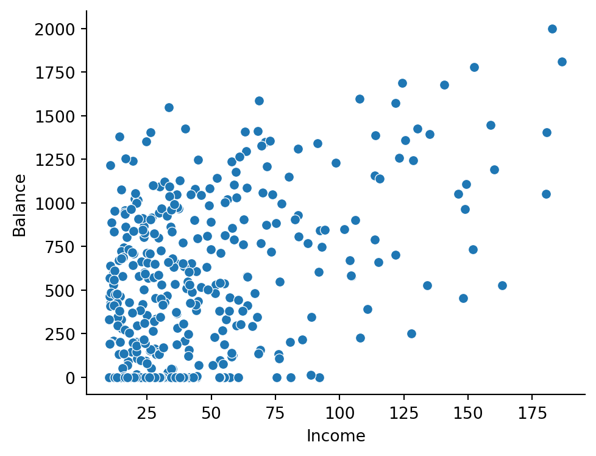
There seems to be a positive relationship — as Income increases, so does Balance. But notice the cluster of observations at the low end of Income. Let’s zoom in on people with Income below $50K:
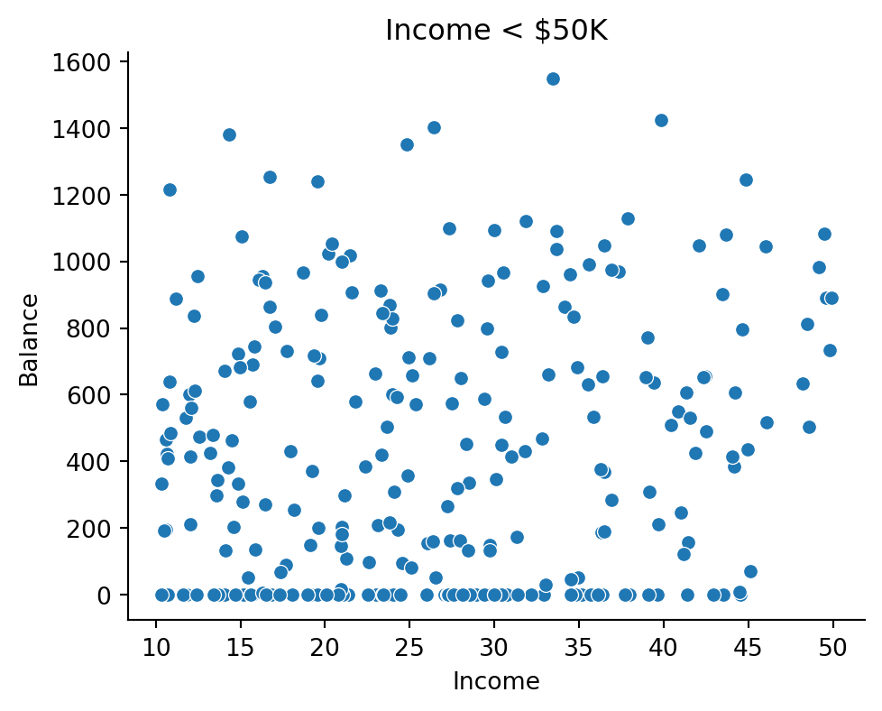
A large number of people with incomes below this threshold carry a Balance of $0! There’s very little variance in Balance for this region of the data. Keep this in mind — our model may struggle here.
Let’s ask seaborn to add a regression line to the full data. This gives us a preview before we fit our own model:
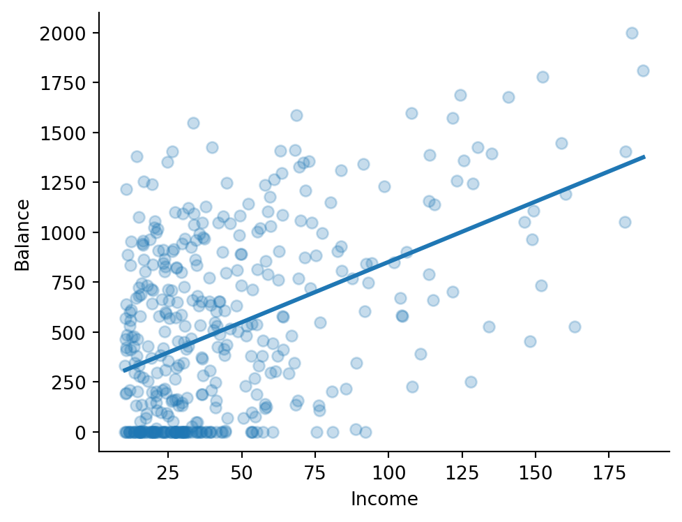
This confirms our visual intuition about a positive linear relationship. Let’s model it ourselves with bossanova!
bossanova’s model() function takes two arguments:
lm())Here’s a quick reference for formula syntax:
| Formula | Meaning |
|---|---|
y ~ x |
Intercept + slope for x |
y ~ 1 + x |
Same as above (intercept is implicit) |
y ~ 0 + x |
Slope only, no intercept |
y ~ x1 + x2 |
Additive: two main effects |
y ~ x1 * x2 |
Main effects + interaction |
y ~ x1:x2 |
Interaction only (no main effects) |
model(formula='Balance ~ Income', family='gaussian', link='identity', method='ols', n_obs=400, has data)
Remember that formula syntax automatically adds an intercept. These two formulas are equivalent:
Balance ~ IncomeBalance ~ 1 + IncomeBefore fitting, we can inspect the design matrix — the actual numbers the model will work with. This is the \(X\) matrix from the GLM equation \(\hat{y} = X\hat{\beta}\):
| Intercept | Income |
|---|---|
| f64 | f64 |
| 1.0 | 14.891 |
| 1.0 | 106.025 |
| 1.0 | 104.593 |
| 1.0 | 148.924 |
| 1.0 | 55.882 |
Let’s visualize it which is helpful as we get to more complex models
Reading the design matrix
The design matrix has one row per observation and one column per model term:
- Intercept — a column of 1s (the “constant” that captures the baseline level of Balance)
- Income — the raw income values for each person
The heatmap visualization lets you see the structure at a glance. This becomes more useful with multiple predictors.
To estimate the model parameters (\(\hat{\beta}\)), we can call .fit()
This won’t return anything, but stores the parameter estimates as a dataframe in .params
Each coefficient tells you the expected change in Balance for a 1-unit increase in that predictor, when all other predictors are fixed at 0:
In plain language: “For each additional thousand dollars of income, a person’s average credit card debt is expected to increase by about $6.”
But wait — is the Intercept interpretation meaningful? We’ll come back to this…
Before drawing conclusions, we should check that we’re not violating the core assumptions of the GLM: independent and identically distributed (iid) errors.
The .diagnostics property gives us key fit statistics:
| df_model | df_resid | rsquared | rsquared_adj | fstatistic | fstatistic_pvalue | sigma | null_deviance | deviance | dispersion | mse | pseudo_rsquared | aic | bic | loglik |
|---|---|---|---|---|---|---|---|---|---|---|---|---|---|---|
| f64 | f64 | f64 | f64 | f64 | f64 | f64 | f64 | f64 | f64 | f64 | f64 | f64 | f64 | f64 |
| 1.0 | 398.0 | 0.215 | 0.213 | 109.0 | 2.2200e-16 | 407.9 | 8.434e7 | 6.621e7 | 166400.0 | 165500.0 | 0.215 | 5948.0 | 5960.0 | -2971.0 |
Coefficient of Determination (\(R^2\))
\(R^2\) measures the proportion of variance in Balance that our model explains:
\[R^2 = 1 - \frac{SS_{res}}{SS_{tot}}\]
- \(R^2 \approx 1\) → model explains most of the variance
- \(R^2 \approx 0\) → model explains very little
- \(R^2 < 0\) → model is systematically worse than just predicting the mean
Our \(R^2 \approx 0.21\) means Income alone explains about 21% of the variance in Balance. Not bad for a single predictor, but there’s clearly more going on.
We can also check the .metadata which summarizes useful info about the data the model use for fitting. This is helpful because we have to drop drows where data is missing and this lets you inspect if/when that’s happening!
Augmented Data
Similar to libraries like broom in R, after calling .fit(), the .data property of a model stores the original data plus several computed columns. We’ll explore these in more detail soon:
| Column | Description |
|---|---|
fitted |
Predicted values (\(\hat{y}_i\)) |
resid |
Residuals (\(y_i - \hat{y}_i\)) |
hat |
Leverage values |
std_resid |
Standardized residuals |
cooksd |
Cook’s distance (influence) |
Most helpful is to inspect the model residuals (errors) to see if any patterns help us diagnose violations of assumptions:
Reading residual plots
The 4-panel display helps check our GLM assumptions:
- Residuals vs Fitted — look for random scatter around 0 (no patterns)
- Q-Q Plot — check if residuals are approximately normal (points on the diagonal)
- Scale-Location — check for equal variance across fitted values (should be flat)
- Residuals vs Leverage — identify influential observations (watch for high Cook’s distance)
Notice the cluster of large negative residuals at low fitted values — these are the people with low incomes who carry $0 Balance. Our model over-predicts for them because there’s no variance in Balance to learn from in that region.
We can see and access these columns directly if needed:
| Index | Income | Limit | Rating | Cards | Age | Education | Gender | Student | Married | Ethnicity | Balance | fitted | resid | hat | std_resid | cooksd |
|---|---|---|---|---|---|---|---|---|---|---|---|---|---|---|---|---|
| i64 | f64 | i64 | i64 | i64 | i64 | i64 | str | str | str | str | i64 | f64 | f64 | f64 | f64 | f64 |
| 1 | 14.891 | 3606 | 283 | 2 | 34 | 11 | "Male" | "No" | "Yes" | "Caucasian" | 333 | 336.58093 | -3.58093 | 0.004356 | -0.008799 | 1.6935e-7 |
| 2 | 106.025 | 6645 | 483 | 3 | 82 | 15 | "Female" | "Yes" | "Yes" | "Asian" | 903 | 887.792481 | 15.207519 | 0.00996 | 0.037473 | 0.000007 |
| 3 | 104.593 | 7075 | 514 | 4 | 71 | 11 | "Male" | "No" | "No" | "Asian" | 580 | 879.131225 | -299.131225 | 0.009613 | -0.736959 | 0.002636 |
| 4 | 148.924 | 9504 | 681 | 3 | 36 | 11 | "Female" | "No" | "No" | "Asian" | 964 | 1147.261223 | -183.261223 | 0.0242 | -0.454856 | 0.002565 |
| 5 | 55.882 | 4897 | 357 | 2 | 68 | 16 | "Male" | "No" | "Yes" | "Caucasian" | 331 | 584.509395 | -253.509395 | 0.002729 | -0.622403 | 0.00053 |
Let’s plot predicted vs observed Balance to see how well our model does:
You might be thinking: “I thought the Intercept was always the mean of \(y\) — what gives?”
The key lesson when interpreting any GLM parameter:
A parameter estimate is the expected change in \(y\) for a 1-unit change in its predictor, when all other model parameters are fixed at 0.
So our Intercept of ~$247 is the predicted Balance when Income = 0. But is that even in the range of our data?
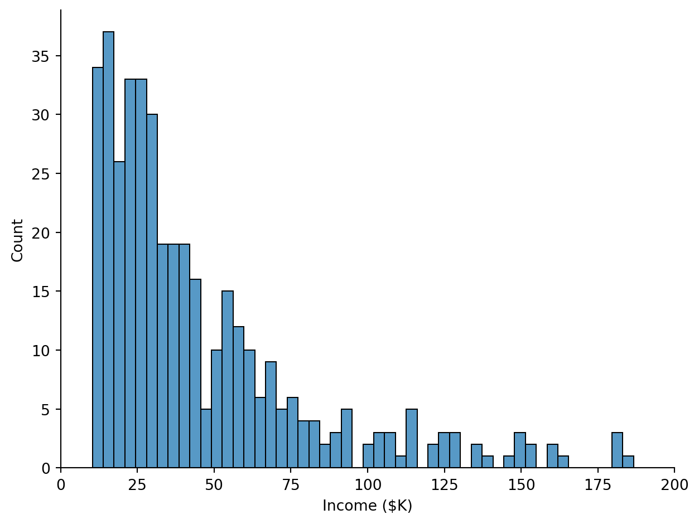
Nobody in our sample has an Income near $0! The Intercept is extrapolating to a region of the data we never observed. Models will happily make predictions outside the range of your data, but those predictions aren’t always meaningful.
What we really want is for the Intercept to represent Balance at some reasonable, observed value of Income. We can achieve this by mean-centering — subtracting the mean from each value:
\[Income\_c_i = Income_i - \overline{Income}\]
This shifts Income so that 0 = the sample mean.
We can do this manually in polars by creating a new column like this:
| Index | Income | Limit | Rating | Cards | Age | Education | Gender | Student | Married | Ethnicity | Balance | Income_c |
|---|---|---|---|---|---|---|---|---|---|---|---|---|
| i64 | f64 | i64 | i64 | i64 | i64 | i64 | str | str | str | str | i64 | f64 |
| 1 | 14.891 | 3606 | 283 | 2 | 34 | 11 | "Male" | "No" | "Yes" | "Caucasian" | 333 | -30.327885 |
| 2 | 106.025 | 6645 | 483 | 3 | 82 | 15 | "Female" | "Yes" | "Yes" | "Asian" | 903 | 60.806115 |
| 3 | 104.593 | 7075 | 514 | 4 | 71 | 11 | "Male" | "No" | "No" | "Asian" | 580 | 59.374115 |
| 4 | 148.924 | 9504 | 681 | 3 | 36 | 11 | "Female" | "No" | "No" | "Asian" | 964 | 103.705115 |
| 5 | 55.882 | 4897 | 357 | 2 | 68 | 16 | "Male" | "No" | "Yes" | "Caucasian" | 331 | 10.663115 |
But bossanova makes this easy for us by allowing us to specify this directly in the formula when we create a model:
Original
Centered
Notice that the Intercept changed, what’s going on?
- Intercept changed — it’s now the predicted Balance when Income is at its mean. For a univariate model, this equals the mean of Balance itself!
- Slope is identical — centering never changes the slope of the variable being centered
- Predictions are identical — centering changes interpretation, not model fit
Let’s verify that the centered Intercept really is the mean of Balance:
And let’s verify that the fitted values are identical between both models:
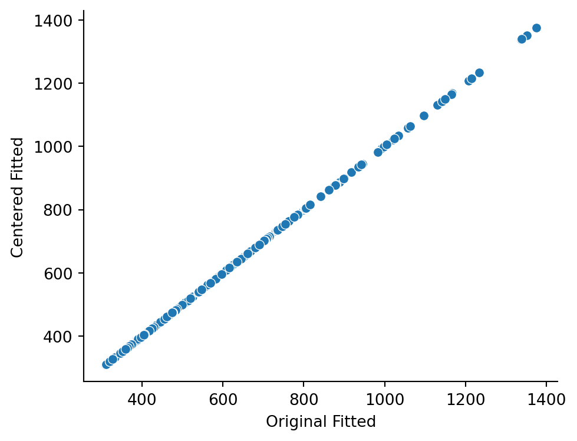
We’ve estimated a relationship between Income and Balance, but how do we know it’s meaningful? We can formulate hypotheses as model comparisons — comparing a compact model to an augmented model and asking whether the trade-off between added complexity and reduction in error is worth it.
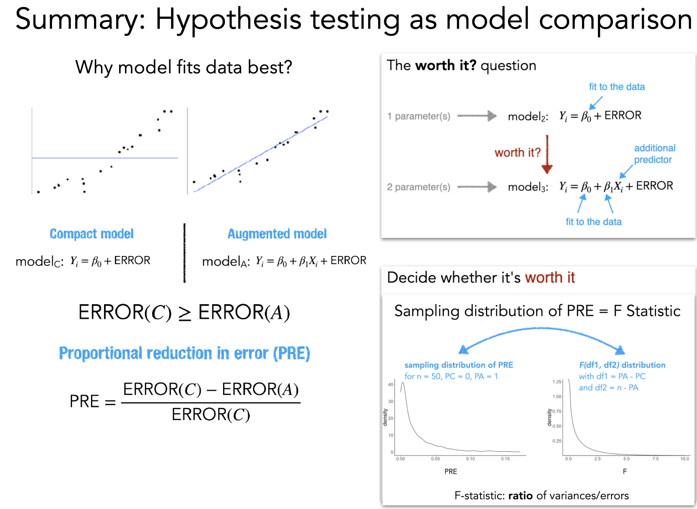
The key idea: compare two nested models and ask what proportion of the compact model’s error the augmented model eliminates:
\[ PRE = \frac{SSE_{compact} - SSE_{augmented}}{SSE_{compact}} \]
For single-predictor models, PRE is identical to \(R^2\)! But the PRE framework generalizes to comparing any two nested models.
PRE alone doesn’t tell us whether the improvement is worth the added complexity. We convert PRE to an F-statistic that accounts for degrees of freedom:
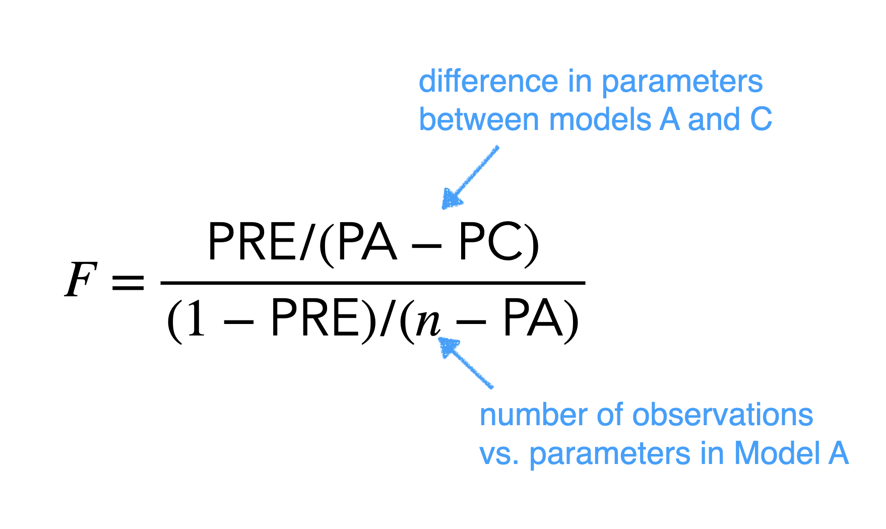
The F-statistic weighs the error reduction against how many parameters we added. We can then look up the probability of observing an F this large under the null hypothesis (compact model is correct) to get a p-value.
Degrees of freedom
Degrees of freedom (df) capture how many values are “free to vary” after estimating parameters.
Consider the values \(x = [3, 5, 7, 9, 11]\) with mean \(\bar{x} = 7\). If we know the mean and all values except one, we can recover the missing value — it’s “fixed.” Estimating the mean consumed one degree of freedom, which is why the sample variance divides by \(n - 1\):
\[\sigma^2_x = \frac{\sum_{i=1}^n (x_i - \bar{x})^2}{n-1}\]
In the GLM:
- Model df = number of parameters (\(p\)). Compact: \(p = 1\) (intercept). Augmented: \(p = 2\) (intercept + slope).
- Error df = \(n - p\). With 400 observations: compact has \(399\), augmented has \(398\).
- The F-test uses the difference in model df (numerator) and the error df of the augmented model (denominator).
compare()bossanova provides compare() to automate this entire process. Pass the models from simplest to most complex:
compare() output| Column | Meaning |
|---|---|
model |
The formula for each model |
df_resid |
Residual degrees of freedom (\(n - p\)) |
rss |
Residual sum of squares (total prediction error) |
df |
Degrees of freedom for this comparison |
ss |
Sum of squares explained by the added predictor(s) |
F |
F-statistic |
p_value |
Probability of observing this F under the null |
PRE |
Proportional reduction in error |
The first row is the baseline (compact model) — it has no comparison values. The second row compares the augmented model to the compact.
With a large F-statistic and \(p < .001\), adding Income significantly improves our predictions. And notice the PRE matches the \(R^2\) from .diagnostics — for single-predictor models they’re the same!
Note for R users
compare() is similar to anova() in R (nested model comparison) but a little smarter and adapts the type of comparison statistic and test based on the type of model(s) you’re comparing. It’s also a bit confusingly named based on how you might familiar with talking about ANOVA.
We’ve learned a standard modeling workflow:
m = model("y ~ x", data)m.designmat, m.plot_design()m.fit()m.paramsm.diagnostics, m.plot_resid()m.data (fitted values, residuals, leverage, Cook’s distance)center()compare(compact, augmented)Now let’s see what happens when we add more predictors.
We’ll now build multiple regression models that combine several predictors at once. We’ll work with two continuous predictors:
Let’s start by visualizing these relationships:
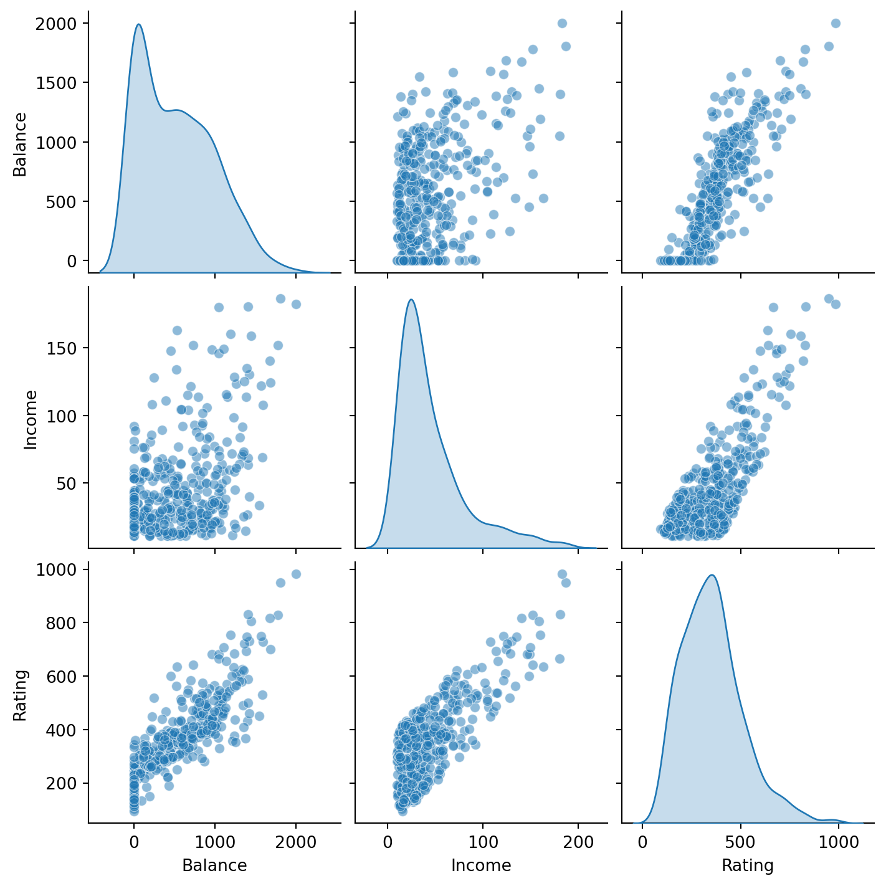
Balance ~ Income + RatingOur first multiple regression includes both predictors additively — each has its own slope, but their effects are independent:
\[ \hat{Balance}_i = \beta_0 + \beta_1 \cdot Income_i + \beta_2 \cdot Rating_i \]
| Intercept | Income | Rating |
|---|---|---|
| f64 | f64 | f64 |
| 1.0 | 14.891 | 283.0 |
| 1.0 | 106.025 | 483.0 |
| 1.0 | 104.593 | 514.0 |
| 1.0 | 148.924 | 681.0 |
| 1.0 | 55.882 | 357.0 |
| … | … | … |
| 1.0 | 12.096 | 307.0 |
| 1.0 | 13.364 | 296.0 |
| 1.0 | 57.872 | 321.0 |
| 1.0 | 37.728 | 192.0 |
| 1.0 | 18.701 | 415.0 |
The design matrix now has three columns: Intercept, Income, and Rating. Each row is still one observation. The heatmap helps you see how the columns differ in scale.
Remember: each coefficient tells you the expected change in Balance for a 1-unit increase in that predictor, holding all other predictors at 0.
| term | estimate |
|---|---|
| str | f64 |
| "Intercept" | -534.8 |
| "Income" | -7.672 |
| "Rating" | 3.949 |
| term | estimate |
|---|---|
| str | f64 |
| "Intercept" | -534.8 |
| "Income" | -7.672 |
| "Rating" | 3.949 |
Let’s inspect diagnostics:
Look at how they’ve changed from before. If we plot against predictions we can see the same pattern:
Balance ~ Income * RatingDoes the effect of Income on Balance depend on a person’s Rating? An interaction lets us test this:
\[ \hat{Balance}_i = \beta_0 + \beta_1 \cdot Income_i + \beta_2 \cdot Rating_i + \beta_3 \cdot Income_i \times Rating_i \]
The * shorthand in the formula automatically includes both main effects and their interaction:
Remember we learned that creating new predictors that products of others (interaction) will always introduce a correlation. We can see this in the mode before fiting:
Variance Inflation Factors (VIF)
VIF measures how much the variance of each coefficient is inflated due to correlation with other predictors (multicollinearity).
- VIF = 1 → no correlation with other predictors
- VIF > 5 → concerning multicollinearity
- VIF > 10 → serious multicollinearity
Income and Rating are highly correlated (people with higher incomes tend to have higher credit ratings), so expect elevated VIFs here.
Like before we can solve this and the interpretation problem by centering:
Mean-centering subtracts the mean from each predictor before fitting. This changes what the coefficients refer to without changing the model’s predictions:
| Without centering | With centering |
|---|---|
| Intercept = Balance at Income=0, Rating=0 | Intercept = Balance at mean Income, mean Rating |
| Income slope = effect when Rating=0 | Income slope = effect at mean Rating |
| Interaction = same either way | Interaction = same either way |
| term | vif | ci_increase_factor |
|---|---|---|
| str | f64 | f64 |
| "center(Income)" | 3.900899 | 1.975069 |
| "center(Rating)" | 2.675803 | 1.635788 |
| "center(Income):center(Rating)" | 2.231439 | 1.4938 |
Uncentered
| term | estimate |
|---|---|
| str | f64 |
| "Intercept" | -461.9 |
| "Income" | -9.603 |
| "Rating" | 3.795 |
| "Income:Rating" | 0.003394 |
| term | estimate |
|---|---|
| str | f64 |
| "Intercept" | -461.9 |
| "Income" | -9.603 |
| "Rating" | 3.795 |
| "Income:Rating" | 0.003394 |
Centered
| term | estimate |
|---|---|
| str | f64 |
| "Intercept" | 505.4 |
| "center(Income)" | -8.399 |
| "center(Rating)" | 3.949 |
| "center(Income):center(Rating)" | 0.003394 |
What changed and what didn’t?
- Intercept changed — now it’s the predicted Balance at the mean of both predictors (a meaningful value!)
- Main effect slopes changed — now interpreted at the mean of the other predictor
- Interaction is identical — centering never affects interactions
- Predictions are identical — centering changes interpretation, not fit
Let’s compare both models:
| model | PRE | F | rss | ss | df | df_resid | p_value |
|---|---|---|---|---|---|---|---|
| str | f64 | f64 | f64 | f64 | f64 | f64 | f64 |
| "Balance ~ Income + Rating" | null | null | 1.053e7 | null | null | 397.0 | null |
| "Balance ~ center(Income) * cen… | 0.02028 | 8.196 | 1.032e7 | 213600.0 | 1.0 | 396.0 | 0.004421 |
This shows us that the addition of the interaction is worth-it, tho it only reduces error by about 2%
*) let one predictor’s effect depend on another — the interaction term is a product column in the design matrixm.designmat) to understand what your model actually seesNow let’s see what happens when we add a categorical predictor.
We’ll now add a categorical predictor: Student (Yes / No).
The key questions:
Let’s start by visualizing the data:
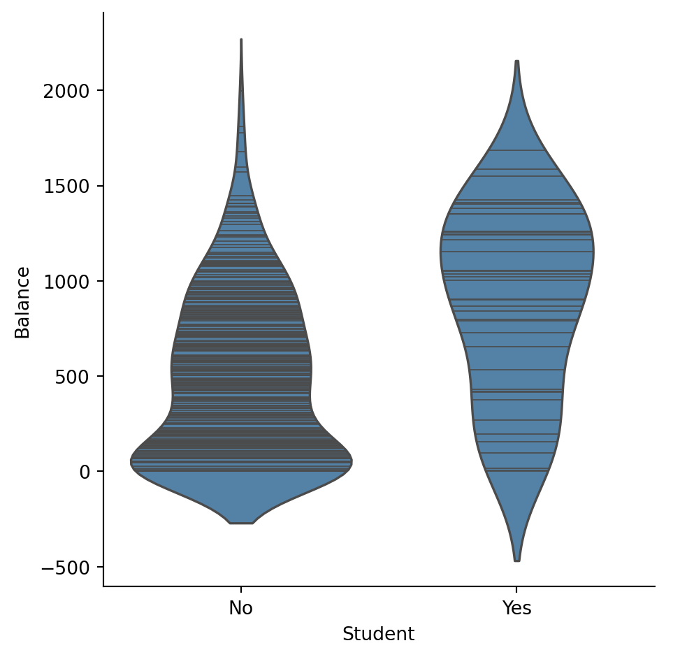
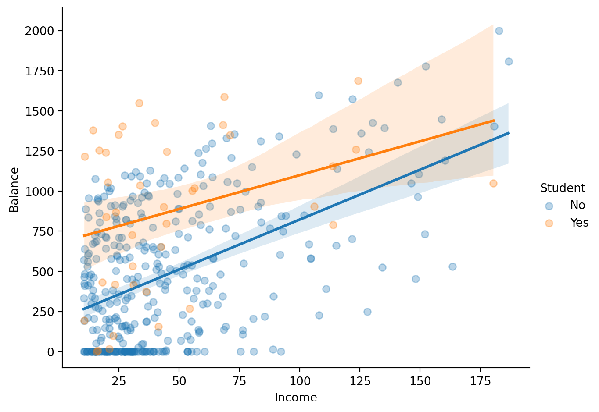
Balance ~ Income + StudentThis is a parallel lines model — students and non-students get different intercepts but the same slope for Income:
\[ \hat{Balance}_i = \beta_0 + \beta_1 \cdot Income_i + \beta_2 \cdot Student[Yes]_i \]
| Intercept | Income | Student[Yes] |
|---|---|---|
| f64 | f64 | f64 |
| 1.0 | 14.891 | 0.0 |
| 1.0 | 106.025 | 1.0 |
| 1.0 | 104.593 | 0.0 |
| 1.0 | 148.924 | 0.0 |
| 1.0 | 55.882 | 0.0 |
| … | … | … |
| 1.0 | 12.096 | 0.0 |
| 1.0 | 13.364 | 0.0 |
| 1.0 | 57.872 | 0.0 |
| 1.0 | 37.728 | 0.0 |
| 1.0 | 18.701 | 0.0 |
Treatment (dummy) coding
Notice the design matrix has a column called Student[Yes] (not “Student”). This is treatment coding — the default for categorical variables:
- The reference level is chosen alphabetically → No (because N < Y)
Student[Yes] = 1for students,Student[Yes] = 0for non-students- The intercept represents the reference group (Student = No)
- The
Student[Yes]coefficient is the difference between Yes and NoThis is the same coding scheme used in R’s
lm()by default.
The intercept interpretation is awkward — Income = 0 isn’t meaningful. We’ll fix that with centering shortly.
| df_model | df_resid | rsquared | rsquared_adj | fstatistic | fstatistic_pvalue | sigma | null_deviance | deviance | dispersion | mse | pseudo_rsquared | aic | bic | loglik |
|---|---|---|---|---|---|---|---|---|---|---|---|---|---|---|
| f64 | f64 | f64 | f64 | f64 | f64 | f64 | f64 | f64 | f64 | f64 | f64 | f64 | f64 | f64 |
| 2.0 | 397.0 | 0.2775 | 0.2738 | 76.22 | 2.2200e-16 | 391.8 | 8.434e7 | 6.094e7 | 153500.0 | 152300.0 | 0.2775 | 5917.0 | 5933.0 | -2954.0 |
| Index | Income | Limit | Rating | Cards | Age | Education | Gender | Student | Married | Ethnicity | Balance | fitted | resid | hat | std_resid | cooksd |
|---|---|---|---|---|---|---|---|---|---|---|---|---|---|---|---|---|
| i64 | f64 | i64 | i64 | i64 | i64 | i64 | str | str | str | str | i64 | f64 | f64 | f64 | f64 | f64 |
| 1 | 14.891 | 3606 | 283 | 2 | 34 | 11 | "Male" | "No" | "Yes" | "Caucasian" | 333 | 300.255705 | 32.744295 | 0.004606 | 0.083769 | 0.000011 |
| 2 | 106.025 | 6645 | 483 | 3 | 82 | 15 | "Female" | "Yes" | "Yes" | "Asian" | 903 | 1228.302682 | -325.302682 | 0.031963 | -0.843896 | 0.007838 |
| 3 | 104.593 | 7075 | 514 | 4 | 71 | 11 | "Male" | "No" | "No" | "Asian" | 580 | 837.062574 | -257.062574 | 0.009949 | -0.659413 | 0.001456 |
| 4 | 148.924 | 9504 | 681 | 3 | 36 | 11 | "Female" | "No" | "No" | "Asian" | 964 | 1102.354154 | -138.354154 | 0.024582 | -0.357556 | 0.001074 |
| 5 | 55.882 | 4897 | 357 | 2 | 68 | 16 | "Male" | "No" | "Yes" | "Caucasian" | 331 | 545.559604 | -214.559604 | 0.003017 | -0.548468 | 0.000303 |
| … | … | … | … | … | … | … | … | … | … | … | … | … | … | … | … | … |
| 396 | 12.096 | 4100 | 307 | 3 | 32 | 13 | "Male" | "No" | "Yes" | "Caucasian" | 560 | 283.529487 | 276.470513 | 0.004962 | 0.707418 | 0.000832 |
| 397 | 13.364 | 3838 | 296 | 5 | 65 | 17 | "Male" | "No" | "No" | "African American" | 480 | 291.117625 | 188.882375 | 0.004796 | 0.483262 | 0.000375 |
| 398 | 57.872 | 4171 | 321 | 5 | 67 | 12 | "Female" | "No" | "Yes" | "Caucasian" | 138 | 557.468432 | -419.468432 | 0.003113 | -1.072318 | 0.001197 |
| 399 | 37.728 | 2525 | 192 | 1 | 44 | 13 | "Male" | "No" | "Yes" | "Caucasian" | 0 | 436.919977 | -436.919977 | 0.002884 | -1.116803 | 0.001203 |
| 400 | 18.701 | 5524 | 415 | 5 | 64 | 7 | "Female" | "No" | "No" | "Asian" | 966 | 323.056024 | 642.943976 | 0.004173 | 1.64448 | 0.003777 |
# Visualize parallel lines from augmented data
_g = sns.relplot(
data=m4.data.to_pandas(),
x="Income",
y="Balance",
hue="Student",
kind="scatter",
alpha=0.3,
height=5,
aspect=1.3,
)
# Overlay fitted lines (parallel — same slope, different intercept)
_g.map_dataframe(sns.lineplot, x="Income", y="fitted", hue="Student", sort=True)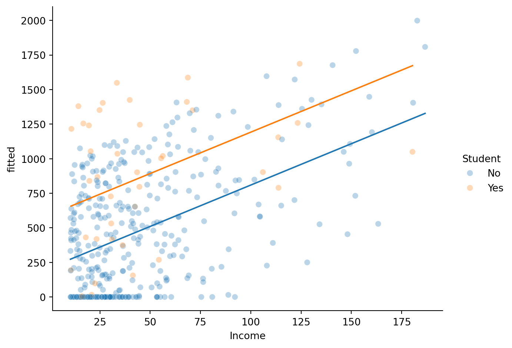
Notice the lines are parallel — adding a categorical predictor with + shifts the intercept but keeps the slope the same for both groups.
Balance ~ Income * StudentDoes the Income → Balance relationship differ for students? An interaction lets us test this — now each group gets its own slope:
\[ \hat{Balance}_i = \beta_0 + \beta_1 \cdot Income_i + \beta_2 \cdot Student[Yes]_i + \beta_3 \cdot Income_i \times Student[Yes]_i \]
| Intercept | Income | Student[Yes] | Income:Student[Yes] |
|---|---|---|---|
| f64 | f64 | f64 | f64 |
| 1.0 | 14.891 | 0.0 | 0.0 |
| 1.0 | 106.025 | 1.0 | 106.025 |
| 1.0 | 104.593 | 0.0 | 0.0 |
| 1.0 | 148.924 | 0.0 | 0.0 |
| 1.0 | 55.882 | 0.0 | 0.0 |
| … | … | … | … |
| 1.0 | 12.096 | 0.0 | 0.0 |
| 1.0 | 13.364 | 0.0 | 0.0 |
| 1.0 | 57.872 | 0.0 | 0.0 |
| 1.0 | 37.728 | 0.0 | 0.0 |
| 1.0 | 18.701 | 0.0 | 0.0 |
The new Income:Student[Yes] column is the product of the dummy variable x Income — it’s non-zero only for students. This is what allows the slope to differ between groups.
| term | estimate |
|---|---|
| str | f64 |
| "Intercept" | 200.6 |
| "Income" | 6.218 |
| "Student[Yes]" | 476.7 |
| "Income:Student[Yes]" | -1.999 |
| term | estimate |
|---|---|
| str | f64 |
| "Intercept" | 200.6 |
| "Income" | 6.218 |
| "Student[Yes]" | 476.7 |
| "Income:Student[Yes]" | -1.999 |
| df_model | df_resid | rsquared | rsquared_adj | fstatistic | fstatistic_pvalue | sigma | null_deviance | deviance | dispersion | mse | pseudo_rsquared | aic | bic | loglik |
|---|---|---|---|---|---|---|---|---|---|---|---|---|---|---|
| f64 | f64 | f64 | f64 | f64 | f64 | f64 | f64 | f64 | f64 | f64 | f64 | f64 | f64 | f64 |
| 3.0 | 396.0 | 0.2799 | 0.2744 | 51.3 | 2.2200e-16 | 391.6 | 8.434e7 | 6.073e7 | 153400.0 | 151800.0 | 0.2799 | 5917.0 | 5937.0 | -2954.0 |
# Visualize different slopes per Student group
_g = sns.relplot(
data=m5.data.to_pandas(),
x="Income",
y="Balance",
hue="Student",
kind="scatter",
alpha=0.3,
height=5,
aspect=1.3,
)
# Overlay fitted lines (different slopes per group)
_g.map_dataframe(sns.lineplot, x="Income", y="fitted", hue="Student", sort=True)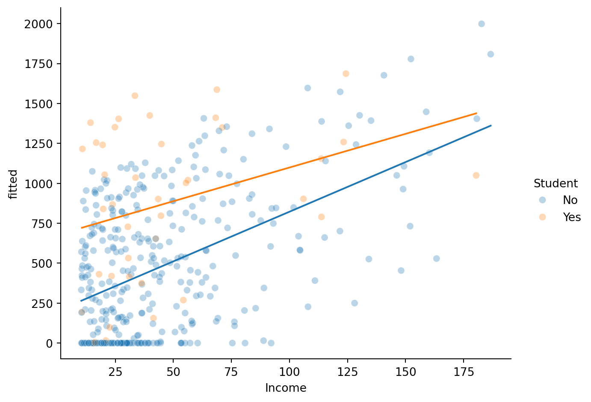
Now the lines have different slopes — the interaction lets the Income → Balance relationship vary by Student status.
The raw coefficients are interpreted “when Income = 0” — which isn’t meaningful. Let’s center Income so coefficients are interpreted at the mean of Income instead.
Here we’ll create the centered column ourselves with center() as a polars expression and use it in the formula:
Uncentered
| term | estimate |
|---|---|
| str | f64 |
| "Intercept" | 200.6 |
| "Income" | 6.218 |
| "Student[Yes]" | 476.7 |
| "Income:Student[Yes]" | -1.999 |
Centered
| term | estimate |
|---|---|
| str | f64 |
| "Intercept" | 481.8 |
| "center(Income)" | 6.218 |
| "Student[Yes]" | 386.3 |
| "center(Income):Student[Yes]" | -1.999 |
Interpreting centered parameters
With centering, each coefficient has a concrete meaning:
Parameter Interpretation Intercept Predicted Balance for Student = No at mean Income Income_c Income slope for non-students Student[Yes] Difference in Balance between Students and Non-students at mean Income Income_c:Student[Yes] How much steeper (or shallower) the Income slope is for students vs non-students The interaction term is unchanged by centering — it’s always the difference in slopes.
Is this new interaction term worth it?
We’ve built five regression models today, each building on the last:
| Model | Formula | Key concept |
|---|---|---|
| m1 | Balance ~ Income |
Univariate regression, baseline workflow |
| m2 | Balance ~ Income + Rating |
Multiple predictors, VIF |
| m3 | Balance ~ Income * Rating |
Continuous x continuous interaction |
| m4 | Balance ~ Income + Student |
Categorical predictor, parallel lines |
| m5 | Balance ~ Income * Student |
Continuous x categorical interaction, different slopes |
m.designmat to see how+) give parallel lines — same slope, different intercepts per group*) allow different slopes per group — the interaction coefficient is the difference in slopescompare()) tests whether added complexity is worth the reduction in errorbossanova includes the penguins dataset you’ve seen before. Try using the cells below to play around and make sure you understand these core concepts
| species | island | bill_length_mm | bill_depth_mm | flipper_length_mm | body_mass_g | sex | year |
|---|---|---|---|---|---|---|---|
| str | str | f64 | f64 | f64 | f64 | str | i64 |
| "Adelie" | "Torgersen" | 39.1 | 18.7 | 181.0 | 3750.0 | "male" | 2007 |
| "Adelie" | "Torgersen" | 39.5 | 17.4 | 186.0 | 3800.0 | "female" | 2007 |
| "Adelie" | "Torgersen" | 40.3 | 18.0 | 195.0 | 3250.0 | "female" | 2007 |
| "Adelie" | "Torgersen" | null | null | null | null | "NA" | 2007 |
| "Adelie" | "Torgersen" | 36.7 | 19.3 | 193.0 | 3450.0 | "female" | 2007 |